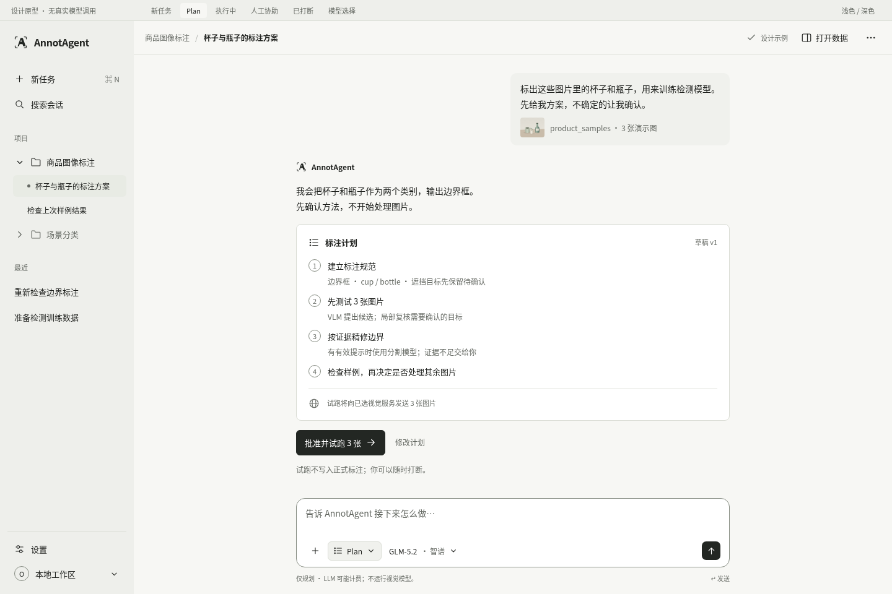
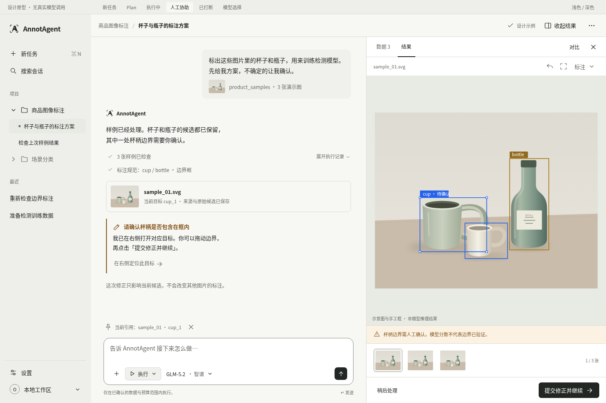
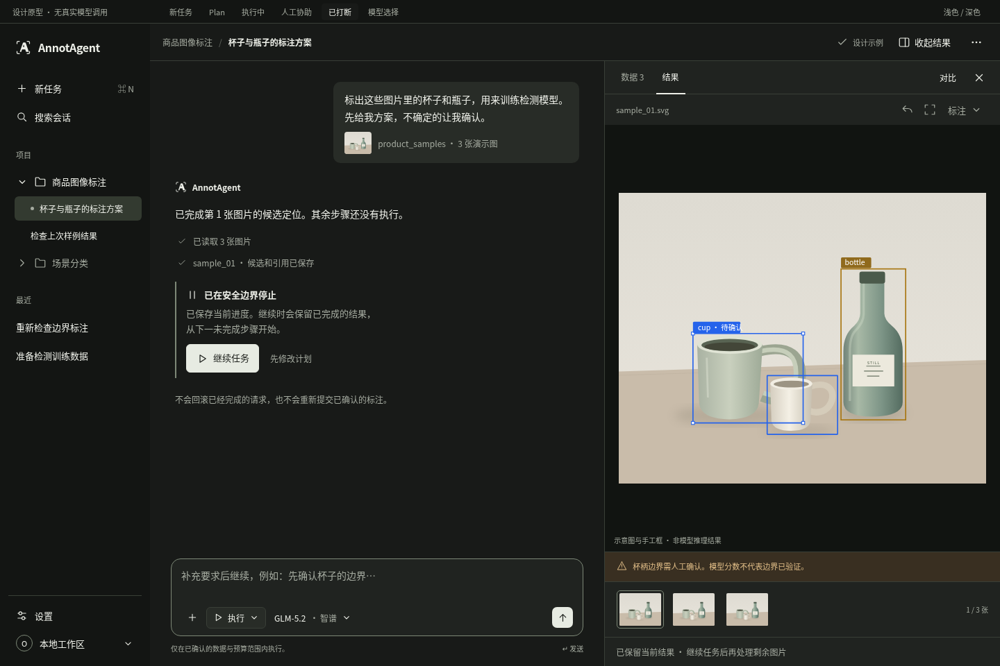

第一版参考 / 实际 React 界面
左侧是用户提供的设计参考，右侧是隔离服务的实际 UI Preview / Fixture 截图。两者都不代表真实推理结果。实际页面源版本、URL、尺寸及主题见 截图 manifest。打开可交互预览
新任务 · 单一项目侧栏与居中 Composer
 参考 · 1440×960 · Light
参考 · 1440×960 · Light 实际 UI Preview · 1440×960 · Light
实际 UI Preview · 1440×960 · LightPlan · 有限范围批准

参考 实际 · 文案明确标识固定演示计划，不冒充模型回复
实际 · 文案明确标识固定演示计划，不冒充模型回复人工协助 · 当前问题与图片

参考 实际 · 旧计划按需展开，当前问题与修正直接可见
实际 · 旧计划按需展开，当前问题与修正直接可见已打断 · 深色主题

参考 实际 · 模拟停止回执与继续
实际 · 模拟停止回执与继续模型选择
 参考
参考 实际 · 搜索、Provider 分组、禁用原因与下次生效
实际 · 搜索、Provider 分组、禁用原因与下次生效Settings 六页 · 实际 UI Preview